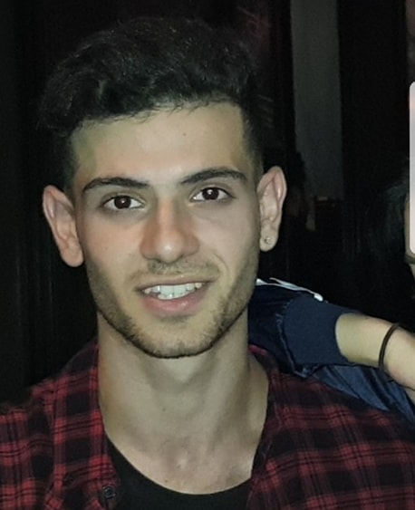
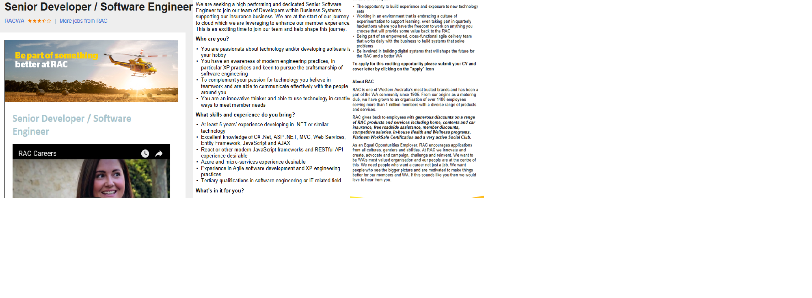
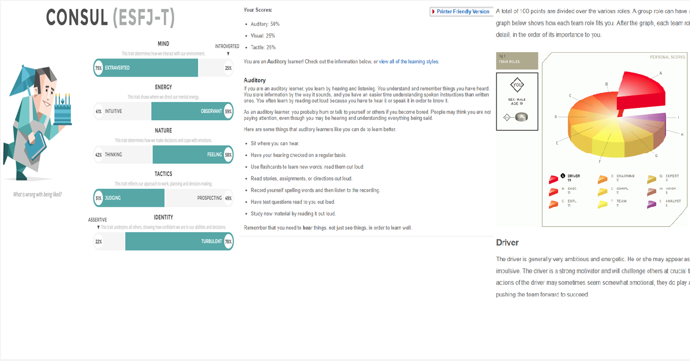

Assignment 1
personal information
Hello, welcome to my website. My name is Huseyn Bator and I developed this website from scratch and wrote everything on here. Here is some background information about me. I was born in Australia on the 18th of March 1999 (19), but more specifically I was born in Victoria, Carlton. My background is Turkish, because both of my parents were born there. I can speak 2 different languages apart from English, those languages are Turkish and Italian. I know Italian because I studied it all the way throughout primary school and high school. Unfortunately, I stopped it at year 11 because it was getting to difficult.
I live in Brunswick, near my high school Brunswick secondary college, which I graduated from VCE in 2016. I then went to RMIT last year (2017) and studied a bachelor of computing studies. The same study as which I am in now. I then took a gap year after doing half a semester, due to unfortunate family events. I was very sporty throughout my high school years. I got involved in lots of curriculum sports such as athletics, tennis, and basketball. Outside of school I did tennis, taekwondo and went to the gym occasionally. My favourite sport is tennis, I played it for 13 years. One interesting fact is that I have visited 4 countries.
my information
Name: Huseyin Bator
student ID:S3660418
Personal Email: Huseyinbator@hotmail.com Student email: S3660418@student.rmit.edu.auINTERESTS IN IT
what sparked my interest in I.T you ask? Well ever since I got my first HP desktop computer at the beginning of high school I was in love, I became a tech-head . I thought it was so amazing that technology can do such amazing things, such as display games in amazing quality and being able to find easy information just from a google search. Later, down the years I learnt how routers and modems and desktops worked. I built my first desktop in 2015 and I was so amazed and intrigued on how easy it was. I always tell people from that experience, building a pc is like putting Lego bricks together, it’s that easy.
after a while me and my friend(Steven) got into coding python, C++ and java. We wanted to create our own website just for fun. It was amazing all the trial and erroring and all the outputs we would get from the inputs. From there on that’s where my passion began for I.T. Now I still have a passion for coding in i.t, I still think it is very fun. My experiences in I.T consist of coding websites, programs (C++, python, java), built my own pc and I have configured my housing network.
I chose to study at Royal Melbourne Institute of Technology (RMIT) because firstly, in my opinion I think it was the best school to study for I.T and arts. Also, that some of my older friends and cousins said its very good if you wanted a future in I.T. Secondly, it offered a wide range of I.T courses. And its easier to get into my future course from this pathway. Thirdly, I had the entry level required and RMIT is very close to me and work.
During my time in this course I hope to garner the bare basic information of I.T and fundamental key knowledge there is to know about I.T. Then hopefully when I am successful with a transfer into Software engineering I hope to learn a diverse range of coding programs and complex coding algorithms to further enhance my programming skills. As software engineering is my ideal future job.
IDEAL JOB
ideally after a semester of doing this program (Bachelor of computing studies) I would like to transfer into a Bachelor of software engineering. as stated previously being a software engineer is my dream job. I would love to develop software for a company’s benefit and would love to help them grow bigger and to help a company grow would feel fantastic. Ultimately my dream job would be software engineering for a major company like Microsoft or Apple.
realistic though for the future I would hope I get into a job like this, although its Perth based I am willing to travel for my future job. I would enjoy it and would think it brings new opportunities into my life. senior developer/software engineer: https://www.seek.com.au/job/35767552?type=standout&userqueryid=ba3e56c38cc743cbd5249bc7006cdcd2-4934555
what appeals to me?
This business is an insurance company and they are on the move with technology. They need software engineers/developers to create an enhanced online user experience for their loyal members. The most interesting part about this job that appeals to me is the “You are passionate about technology and/or developing software is your hobby”. I love creating and developing software, I made some basic programs back in high school. Also working “on innovative technologies and solutions” appeals to me because I always love to work with new gadgets and technology, it is apart of my passion for I.T. Just the thought of creating software for a company’s growth makes it appealing.
Skills and qualifications
The skills specifications for the job required are very achievable. Some skills included are: Being able to work in a team environment. This is necessary because it would make it easier to achieve goals and two minds are always better than one. Experience and skills in the programming languages such as C# .Net, ASP .NET, MVC, Web Services, Entity Framework, JavaScript is essential. This is a must because the whole position resolves around programming languages. The qualification to software engineering is also important, as the company would see that you are qualified. The portfolio created over years at university would also ideally be necessary, so they can see how innovative you are, that will then also show your experience.
my skills and qualification
At the moment I don’t have the exact skills and qualifications for software engineer job but I do have a little bit of them. Some experience I have in programming languages are Java script, C++ and Python, I learnt and played around with these during my high school years as a hobby. I know a little bit of networking, configuring routers and modems. Also, I have customer service experience as I work at JBIHFI and worked at McDonalds during high school. In both jobs I also gained a sense of leadership and teamwork. I can also adapt to new technology very easy.
A plan
The plan on successfully obtaining this job would be to enter my Bachelor of Software Engineering. From there on I would study and put in 100% into my studies and projects, so when I graduate I have this immaculate portfolio to show off in the interviews. Also, whilst studying I would’ve been exposed to a wider range of programming languages and I would have built further knowledge on top of what I already know about programming. Outside of university I would have applied for I.T specific jobs. These jobs would further my skills in the I.T field and I could also record them as experience towards my dream career.
PERSONAL PROFILE
the third test was a teamwwork test, it can be found at: Team role test at https://www.123test.com/team-roles-test/id=JEGZHZ13W5XS&version=
These results mean a lot of different things as each is a different test. The third test I chose suggests that, I like to challenge the team and strive for excellence. The learning test suggests I’m a listener and mostly learn through listening. The Myer Briggs test suggests multiple characteristics about my personality as shown in the image. These results could influence my behaviour in a team by me acting on upon the results. Perhaps If I don’t like one of the results I may change that aspect in a team as it would not be suitable. When forming a team I should consider people that are similar in personality and learning capabilities as we would perform better.
PROJECT IDEAS
As a software engineer I think it would be important to develop a project that requires me to program. The ideal project I would like to create is a health app for platforms the mobile platforms ios and android. This app would be capable of monitoring steps, heart rate via a smart watch, calorie count and also a measure of blood pressure. Some of this data gathered by the app can be presented in a chart or raw statistics instantly or after the week. Although it may have already been done, mine would aim to be simpler and easy to use for everyone. If the innovation gets enough recognition it could possibly be recommended by doctors, their clients could utilise it to keep track of their health. The app would be coded in Java, because most apps are made from java usually for android( Objective-c is used for ios). it would also make it slightly easier to code because I have some knowledge/background with java.
motivation
I have three motives for this project. Firstly, I would like to make a improvements to peoples wellbeing. I want to make a change to someone’s life and make improvements. The app may even save someone life, it would be amazing knowing that you saved someone from a heart attack. Secondly, according to “statista” (link below) there is around 16.9 million smart phone users in Australia. This means that its easily accessible to more than half of Australians. Also it will be affordable as it will be for free. Thirdly, it would be a great learning curve for myself, it would improve my understanding and experience in programming.
description
The first main feature of the app is that it will monitor the persons heart rate. The point of this is so that it indicates what your heart rate is when resting or during exercise. A reason why this is useful is because it will be able to notify the person when their heart rate goes up whilst being sedentary. This could possibly indicate heart problems. The information is recorded so that it can be shown as reference to doctors if experiencing heart problems. This will all be measured using a smart watch, as they all have the pulse sensors at the bottom of the watch face. If there is a steady state heartbeat, then it will not be monitored until heart increases or decreases significantly.
The second feature this app will have is being able to read your blood pressure. This will be done by coding the app to connect with the smart watch and then making the smart watch being able to detect you blood pressure, whilst the watch is strapped around your upper arm. This feature is useful when experiencing dizziness or nausea. The data is also recorded so that it can be presented to your doctor and they can analyse the statistics. Also recorded for personal use and the app will notify you if it is too high.
another feature most fitness freaks will love is the steps calculator. This feature will count your steps in the day. It will notify you when you are close to passing the daily minimum steps. At the end of the week or day (based on settings) it will show graphically how much you have approximately walked, then give you a rating if you should be walking more or you hit your goal. This will be programmed so that every time your phone is in your pocket and or you stride (in motion) it records it as 1 step.
another feature for the fitness people is that you can record your macro nutrients and calories. This will be done by being able to search up a list of brands and foods in the in-built library, giving you the exact calories and macros that are contained in the product. You then add the food to the days entry and at the end of the day it will give you the total amount of calories and macros, with everything you have ate in that day. This will be programmed so a large library of global foods and brands are imported into the app. If the product is not already in the apps library, then the user can add it manually themselves by scanning the products barcode with the camera.
One final feature is the responsive feedback. The app will give you feedback on each feature based on your age and BMI(body mass index). For example if you haven’t walked enough at the end of the week it would give you a notification saying “you should walk more to maintain your fitness level, this week you only walked X amount”. or if you eat something high in fat it may say “this food contains lots of fats”. All in which will be presented as a notification or within the app. At the end of the week it would graphically show you your heart rate and if there were any irregular heart beats. Same fourth with the steps it will show you in a graph if some days you walked more or less than others.
tools and technologies
The hardware needed for the project would be of course a mobile device, one android and one ios. I would also need a pretty fast computer to compile the program over and over again. Also a smart watch to test the features. Software I would need a java compiler, lots of tutorials from the internet. I would mostly use you tube and reddit forums for my source of information.
skills required
The main skills required for this project would be to be able to design a minimal simplistic interface. Also being able to program in java and objective-c. The programming would be used for developing the whole app with all the features. The primary language skill acquired would be java and objective-C as they are the two languages for android and ios. in my opinion I don’t think it will be difficult find the skills and information needed as I mainly will be using YouTube for the information. The problems I may experience would be engineering the app to read heart rate and blood pressure through the smart watch. That would be a major dilemma as I would not know where to start to program the smart watches.
The outcome
If the project is successful, the outcome will be a fully functional health app that reads the heart and blood pressure that can also steps/calorie counts. This app could potentially help and save people’s lives if used properly.